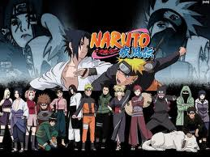
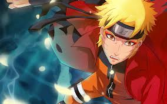
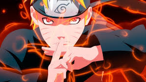
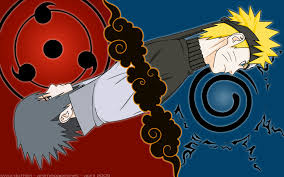
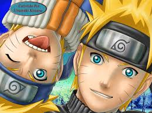
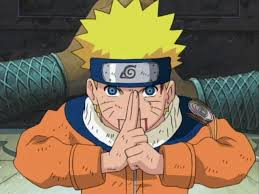
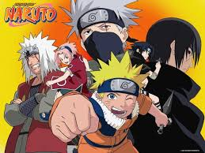
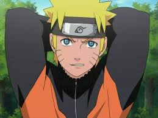
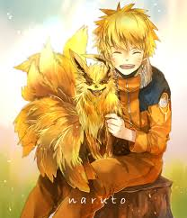

| Перейти до: |
Наруто |
| -------------------------------------------------------------------------------------------------------------------------------------------------------------------------------------------------- Наруто | Світ Наруто | Історія створення | Манга | Комерційний успіх | Наруто: Ураганні хронічки | OVA | Анімаційні фільми | Новелізація | ГАЛЕРЕЯ -------------------------------------------------------------------------------------------------------------------------------------------------------------------------------------------------- |
|
|
Наруто  Наруто - Манга Масаші Кішімото в жанрі сьонен та її аніме- екранізація . Головним її героєм є Наруто Узумакі, шумний і непосидючий ніндзя- підліток, який мріє досягти загального визнання і стати Хокаге - главою свого селища і сильним ніндзя. Щоб домогтися поваги оточуючих , йому належить пройти через тисячі перешкод: іспити ніндзя, різні місії і битви. Перша глава манги була опублікована 21 вересня 1999 японським видавництвом Shueisha в 43-му номері журналу Weekly Shonen Jump. В даний час манга налічує вже 68 томів і продовжує виходити. По ній знято однойменний аніме-телесеріал, створений компаніями Aniplex і Studio Pierrot. Він демонструвався в Японії по каналу TV Tokyo і супутниковому каналу Animax починаючи з 3 жовтня 2002 по 8 лютого 2007 року. Перша частина аніме- екранізації закінчилася 220-м епізодом, тоді як друга, « Naruto: Shippuuden », продовжує транслюватися з 15 лютого 2007 року, причому нові епізоди з'являються практично щотижня. З моменту початку трансляції в ефір вийшло понад 500 епізодів і їх випуск продовжується до цих пір. В аніме - екранізацію входять два телесеріали, дев'ять анімаційних фільмів і вісім OVA ( на червень 2012 р.) Готується до виходу 10 фільм Naruto The Movie: The Bridge, прем'єра якого призначена на весну 2014 р. На основі манги і аніме були створені також відеоігри, романи ( « лайт -новел » ) і колекційна карткова гра. Манга та аніме виявилися дуже популярні як у Японії , так і за її межами. У Японії на 2014 рік було продано понад 150 мільйонів її копій. Світові продажі манги перевищили 270 мільйонів копій , що робить її другою найпопулярнішою мангой в світі після « One Piece ». У США «Наруто», ліцензована видавництвом Viz Media, регулярно потрапляє до списків бестселерів, а в 2006 році її продажі склали майже 10% всіх продажів манги в цій країні. У Росії права на видання та розповсюдження манги належать компаніям «Ексмо » та « Комікс-Арт». Світ Наруто  Дія всієї серії «Наруто » розгортається у вигаданому світі, соціально- політичною структурою нагадує феодальну Японію. Невеликі за розміром держави в ньому діють і розвиваються як самостійні одиниці, керовані феодалами - дайме. Держави мають у своєму розпорядженні Приховані Села, Поселення ніндзя, на чолі яких стоїть незалежний правитель - Каге. Ніндзя використовуються в якості військової сили, а також беруть участь в економічному житті держави, виконуючи оплачувані місії - від прополки городів до вилазок на ворожу територію. Рівень розвитку технологій у світі «Наруто» дуже суперечливий: з одного боку, у розпорядженні героїв є сучасні камери спостереження і передавачі, з іншого - прогрес практично не зачіпає військову сферу, де повністю відсутня вогнепальна зброя і бойові машини, навмисно виключені автором з оповідання. У відсутність досягнень військової промисловості персонажі покладаються на сюрікен, кунаї, мечі і власні спеціальні здібності, які включають використання чакри - магічної енергії, рівнозначної енергії ци, і жестів для її контролю - печаток. Використання чакри підпорядковується суворим правилам, які Кисимото ввів для того, щоб мати можливість легко пояснювати повороти сюжету. Автор висловлював побоювання, що чакра і складання печаток, заснованих на запозичених з Китаю знаках зодіаку, роблять мангу «занадто японської », проте сам він задоволений нею. Історія створення  «Наруто» є першою великою роботою Масаші Кішімото. У 1995 році він отримав « Hop Step Award », Премію журналу « Shonen Jump » для молодих авторів, але протягом кількох наступних років його ідеї для майбутніх робіт відхилялися редакцією журналу. В кінці-кінців, Кисимото вирішив намалювати історію про своє улюблене блюдо - рамен. Первісна версія манги була цілком присвячена секретним інгредієнтів локшини, але після редакції вона перетворилася на " Наруто ". Під такою назвою окрема коротка манга Кисимото була опублікована в журналі « Akamaru Jump » в серпні 1997 року. За сюжетом цієї ранньої роботи, дев'ять друзів перемогли девятихвостого лиса-демона, а єдиний, хто вижив з них тепер доглядає за хлопчиком на ім'я Наруто Узумакі. Ровесники ігнорують Наруто, він відповідає їм тим же і мстить за образи, своїми жорстокими витівками ще більше відштовхуючи людей. Його наставник, бачачи, що у Наруто немає друзів, і розуміючи їх важливість для дитини, дає завдання - привести одного друга, якому Наруто може довіритися. Той безцільно бродить по місту в пошуках потенційних друзів і, випадково зустрівши п'яного художника Курода, відводить його додому. У майстерні Куроди його асистент Такасі Такано показує Наруто картину, яку реставрує Курода в даний момент, - «Символ» знаменитого майстра Сабуро. Все настільки побоюються викрадення картини з майстерні, що навіть приставляють до неї поліцейського. Проте вночі асистента Такасі вбивають, а картину крадуть. Підозра падає на Наруто. Той вмовляє Курода йому довіритися, запевняє, що не крав «Символ», і обіцяє знайти справжнього злочинця. Наруто розслідує злочин і заходить в квартиру поліцейського, який охороняв картину. Там він відчуває запах полотна (нюх його куди гостріше, ніж у звичайних людей) - і розкриває злочинну змову захисників правосуддя. Курода стає першим другом Наруто. У своїх інтерв'ю Кисимото нерідко розповідав про процес створення манги. Наприклад, навколишнє оточення у світі «Наруто», за його словами, була придумана спонтанно, без довгих роздумів. Тим не менше, автор визнавав, що при малюванні села Конохи, одного з основних місць дії, він брав за зразок ландшафт своєї рідної префектури Окаяма в Японії. У процесі створення персонажів Кішімото у пошуках натхнення звертався до різноманітної манзі для юнаків ( сьонен ), проте намагався, щоб його герої були по можливості несхожі на інших. Поділ на команди було зроблено спеціально, щоб кожен загін наділити унікальними властивостями. Кисимото планував кожному члену загону придумати власні унікальні таланти і вразливі сторони. Що ж до завершення манги, то Кішімото ще в 2006 році заявляв, що у нього є думки з приводу останньої глави, включаючи сюжет і текст. Автор, однак, помічав, що на завершення може піти багато часу, оскільки є ще багато проблем, які потрібно вирішити в ході розповіді. У ході Jump Festa 2014 Масаші Кішімото сказав, що манга добігає кінця, але не уточнив скільки ще триватиме її випуск, оскільки залишилося ще багато матеріалу, який потрібно розповісти читачам, також зазначив, що не знає як і чим закінчиться історія . Манга  Манга ділиться на дві частини. На початку першої частини Наруто з великими труднощами завершує навчання і отримує звання геніна - початківця ніндзя. Він і двоє його однокласників, Саске і Сакура, утворюють команду під керівництвом досвідченого сенсея Какаші Хатаке. У міру розвитку сюжету Наруто знаходить нових друзів серед жителів села і опановує нові здібності, вважаючи їх необхідними для того, щоб у майбутньому виконати свою мрію - стати Хокаге. Незабаром Коноха піддається атаці: побіжний ніндзя і розшукуваний злочинець Орочімару разом зі своїми поплічниками нападає на селище, вбиваючи його главу - Третього Хокаге. Будучи в стані змінюватися тілами з іншими людьми, Орочімару бажає дістати тіло Саске, вважаючи його спадкові здібності придатними для себе. Саске добровільно йде до Орочімару, вважаючи, що той дасть йому можливість стати сильнішим і помститися своєму старшому братові Ітачі. До початку подій манги Ітачі знищив весь клан за винятком Саске, для якого помста перетворилася на сенс життя. Наруто, бажаючи повернути Саске, залишає Коноху і присвячує себе тренуванням. Він займається з легендарним ніндзя Джирайя, колишнім товаришем Орочімару, щоб підготуватися до наступної зустрічі і можливої битви з Саске. Друга частина манги, що починається з 28 тому, описує події, що відбуваються через два з половиною роки після першої. Головному героєві вже 16 років. Після тренувань з Джирайєю Наруто повертається в Село Прихованого Листя і воз'єднується з подорослішали друзями. Команда № 7, раніше складалася з Наруто, Саске і Сакури, переформовують. Тепер вона називається «Команда Какаші », а місце Саске в ній займає інший молодий ніндзя - Сай. Провідну роль супротивників Наруто і його друзів займає організація Акацукі, члени якої прагнуть захопити всіх хвостатих демонів, включаючи девятихвостого, заточеного всередині Наруто. Тим часом Саске, вважаючи подальше навчання у Орочімару безглуздим, зраджує його і вбиває. Відшукавши свого старшого брата, щоб помститися за знищення клану, вступає з ним у бій, під час якого Ітачі несподівано падає замертво. Після цього лідер Акацукі, Тобі, повідомляє Саске правду про те, що вбивство клану було доручено Ітачі безпосередньо керівництвом Села Прихованого Листя. Розлючений цим відкриттям, Саске приєднується до Акацукі з метою знищити Коноху. Тим часом, за наказом Тобі члени Акацукі атакують село Прихованого Листя. Ціною великих зусиль жителям Конохи вдається відбити напад, проте саме село виявляється практично повністю зруйнованим. На раді Каге - лідерів найбільших селищ ніндзя - Тобі заявляє, що збирає хвостатих демонів заради відтворення десятіхвостого Бідзія і створення могутньої ілюзії, здатною контролювати людство. Коли керівники інших селищ відмовляються допомагати Тобі, він оголошує про початок Четвертої світової війни ніндзя. У відповідь на це п'ять найбільших країн створюють альянс, на чолі якого стає Райкаге, і об'єднану армію синобі, головнокомандувачем якої стає Кадзекаге Гаара. Починаються бої між сторонами: на стороні Акацукі б'ються численні клони Дзецу і покликані Кабуто Якуси померлі ніндзя, а на стороні альянсу - синобі п'яти країн. Перша глава манги була опублікована у вересневому номері журналу « Shonen Jump » в 1999 році. Початкові 238 глав становлять першу частину і розповідають про початок пригод Наруто; глави з 239 -й по 244- ю відомі як гайден і оповідають про минуле персонажа Какаші Хатаке; всі наступні глави відносяться до другої частини. У США «Наруто» з 2003 року випускає видавництво Viz Media, причому один час манга публікувалася в прискореному темпі, щоб наздогнати японських видавців. Станом на березень 2014 року в Японії випущено 68 томів ( « танкобонов » ) манги, з них 27 становлять першу частину сюжету. Перший танкобон був виданий 3 березня 2000. Крім того, видавництво Shueisha випустило кілька томів ані-манги, заснованої на повнометражних анімаційних фільмах, і розмістило на своєму сайті Shueisha Manga Capsule варіант «Наруто», доступний для скачування на мобільний телефон. Комерційний успіх  «Наруто » користується великим комерційним успіхом як у Японії, так і в інших країнах світу. На батьківщині станом на грудень 2008 року було продано більше 89 млн копій манги, а в 2008 році більше 1 млн одного тільки сорок третій томи, завдяки чому «Наруто» зайняла дев'яте місце в списку найбільш продаваною манги Японії. Тома 41 , 42 і 44 також потрапили в список бестселерів, хоча і розійшлися меншим тиражем. У 2008 році загальна кількість проданих в Японії примірників склало 4261054 копій, а манга стала другою в списку бестселерів. Не менш успішним виявився 2009 рік: за перші півроку «Наруто» зайняв 3-е місце в списку найбільш продаваною в Японії манги, 45 -й том розійшовся тиражем більше 1 млн копій, а 46 -й том - понад 850 тис. копій. У квітні 2010 року компанією Shueisha було зроблено заяву, згідно з яким продано понад 100 млн копій «Наруто», таким чином, ця манга опинилася на п'ятому місці в списку найбільш успішних видань компанії за всю історію - після « Kochikame », «Перли дракона», « Slam Dunk » і « One Piece ». У США манга увійшла до числа бестселерів поряд з такими книгами, як «Мемуари гейші » і « Код да Вінчі». Десять відсотків всієї проданої в 2006 році манги припали на «Наруто». Сьомий том, виданий Viz Media в 2006 році, став першим мангой в історії, що отримала премію Quill Awards як «Кращий графічний роман». У переліку книг загальнонаціональної американської газети « USA Today » 11 -й том «Наруто » довгий час займав місце самої продаваної манги в списку, поки його не випередив 28 -й том, що піднявся на 17- у сходинку в перший тиждень після публікації в березні 2008 року і звернув на себе увагу оглядачів дуже швидким зростанням продажів. Пошуковий запит « Naruto » в системі Yahoo! зайняв четверте місце в рейтингу найпопулярніших пошукових слів 2007 року і сьоме місце - у 2008 році. Поряд з іншими найбільш популярними сучасними творами, «Наруто » міститься в колекції Кіотського міжнародного музею манги. Аніме-екранізація виявилася такою ж успішною, як і оригінальна манга. У 2003 році «Наруто» зайняв 10-е місце в двадцятці кращих аніме-серіалів за версією японського журналу « Animage », а серед 20-ти кращих жіночих персонажів фігурували дві героїні «Наруто» - Хіната Хюга і Сакура Харуно. Роком пізніше серіал в цьому рейтингу опустився на одну позицію, але при цьому одна з його комедійних серій, присвячена спробам головних героїв дізнатися, що саме Какаші Хатаке приховує під маскою на обличчі, зайняла 20 - е місце в списку найбільш цікавих серій. У жовтні 2006 року серед телеглядачів каналу TV Asahi проводилося опитування з метою виявити 100 кращих аніме, в якому « Наруто » зайняв 17-е місце. Серіал отримав премію на третьому фестивалі USTv Awards в Університеті Санто-Томас в Манілі ( Філіппіни ) в 2007 році, а в 2009 році знову опинився в числі переможців, на цей раз в категорії «Вибір студентів» університету. У США аніме «Наруто » стало успішним, як і манга. Оглядач газети « The Washington Times » навіть назвав його сенсацією в світі американської масової культури. Перший DVD-бокс з тринадцятьма серіями був номінований на премію American Anime Awards за кращий дизайн. Він же став третім у рейтингу найбільш продаваних аніме 2008 року, поступившись місцем лише « Batman: Gotham Knight » і «Dragon Ball Z», а в 2009 році йому вдалося піднятися на другу сходинку. Наруто: Ураганні хронічки  Все ще виходить сіквел оригінального серіалу «Наруто ». Його сюжет продовжує екранізацію манги з 28-го тому і далі. Показ серіалу почалися 15 лютого 2007 року на телеканалі TV Tokyo. Починаючи з 8 січня 2009 року, канал щомісяця потоково передає нові епізоди безпосередньо передплатникам. Кожен такий епізод стає доступний через годину після японської прем'єри і забезпечений англійськими субтитрами. Американська компанія Viz Media поширює ці ж епізоди безкоштовно, але через 7 днів після прем'єри. Вільно поширювані епізоди мають в середньому 160 000 переглядів на тиждень. Серіал Naruto: Shippuuden кілька разів ставав лідером за обсягом глядацької аудиторії, наприклад, у квітні 2007 року та у вересні 2008 року. Комерційно аніме також було успішним: DVD Shippuuden неодноразово входили до числа лідерів продажів. OVA  За мотивами «Наруто» створено вісім OVA. У першій з них, що отримала назву « Пошуки чотирилистої червоного конюшини », Наруто допомагає Конохамару, онукові третього хокаге, відшукати чотирилисник, який за повір'ями виконує будь-яке бажання. У другій, під назвою «Відчайдушна сутичка в селі Прихованого Водопада: я герой! », юні ніндзя під керівництвом Какаші Хатаке супроводжують додому главу сусіднього села. Прем'єри цих OVA відбулися на японських фестивалях Jump Festa 2003 і 2004 років, проведених журналом « Shonen Jump »; пізніше першого і другого OVA також були випущені на DVD. Третя, «Великий спортивний фестиваль Конохи, являє собою десятихвилинний мультфільм, насичений туалетним гумором. За сюжетом, Наруто бере участь у спортивних змаганнях, впродовж яких ніяк не може потрапити до вбиральні, оскільки йому постійно заважають його товариші або власні помилки. Ця OVA примітна також тим, що в ній хоча б на кілька секунд з'являються практично всі персонажі серії, як загиблі, так і живі на момент випуску мультфільму: в основному вони представлені стоять в гігантській черзі в туалет. «Великий спортивний фестиваль Конохи » вийшов одночасно з першим анімаційним фільмом, а в американському виданні поставлявся з першим фільмом в колекційному виданні. Четверта OVA, звана «Нарешті сутичка: дзеніна проти геніни, великий бійцівський турнір», оповідає про новий змаганні між ніндзя, організованому в Коносі. Диск з цією OVA входив як бонус в японське видання гри Naruto: Ultimate Ninja 3 на PlayStation 2. П'ята OVA під назвою « Перетин доріг», представлена восени на фестивалі Jump Super Anime Tour 2009, концентрується на Саске під час його навчання разом з товаришами в команді № 7. Шоста OVA під назвою « Джин і три бажання», що вийшла разом з сьомим фільмом, оповідає про сутичці геніни за оволодіння чарівною лампою. Сьома OVA - це музичне доповнення до серіалу, що оповідає про дружбу і ворожнечі Наруто і Саске, а також про їх майбутньої битві. Остання, восьма OVA розповідає про битву Наруто і Конохамару на іспиті на звання Тюніна, на якому був присутній Гаара . Анімаційні фільми  За мотивами «Наруто» було зроблено дев'ять повнометражних анімаційних фільмів. Сюжет перших трьох розгортається в рамках першої частини серіалу, тоді як решта засновані на Naruto: Shippuuden. У першому фільмі прем'єра якого в Японії відбулася 21 серпня 2004 року, розповідається про подорож Наруто, Сакури, Саске і їх сенсея Какаші Хатаке в країну Снігу. Як бонус до DVD з цим фільмом була випущена OVA «Великий спортивний фестиваль Конохи ». У 2007 році фільм був переведений і випущений в США. За ним послідувало аніме « Примарні руїни в надрах землі », де Наруто, Сакура і їх товариш Шикамару Нара виконують чергову місію і виявляються залучені у військовий конфлікт з селом Піску. Третій фільм «Бунт звірів на острові Місяця » був показав 5 серпня 2006 року. Згідно з сюжетом, Наруто, Сакура і їх один Рок Лі під початком Какаші захищають майбутнього принца острова Місяця, Хікару Цуки. Влітку 2008 року компанія Sony видала всі три фільми окремим DVD-боксом. Четвертий фільм, або ж перший, зроблений за мотивами Naruto: Shippuuden, вийшов 4 серпня 2007. У ньому Наруто захищає священнослужітельніцу по імені Сіон, яку починають відвідувати бачення власної смерті. Прем'єра п'ятої частини, « Ураганні хроніки: Узи », відбулася 2 серпня 2008 року. У ньому невідомі ніндзя атакують село Листя, і для її захисту Наруто і Саске об'єднують зусилля. Шосте повнометражне аніме, « Успадкували дух вогню», було показано на екранах 1 серпня 2009. Згідно з сюжетом, із прихованих сіл починають пропадати ніндзя, що володіють генетично успадкованими техніками. В організації викрадень підозрюють село Прихованої листя, і її глава Тсунаде намагається довести свою невинність. Прем'єра сьомого повнометражного аніме «Втрачена вежа» відбулася 31 липня 2010 року. Восьмий, « Кривава в'язниця », запланований на 30 липня 2011 року, дев'ятий, «Шлях ніндзя », вийшов 28 липня 2012. Новелізація  Існує вісім романів ( лайт-новел ) авторства Масатоси Кусакабе, випущених видавництвом Shueisha. Перший з них заснований на чотирьох початкових томах манги, інші представляють собою адаптації анімаційних фільмів по серії «Наруто». Два романи перекладені англійською мовою і опубліковані видавництвом Viz Media. Крім перекладів, Viz Media випускає короткі повісті авторства Трейсі Уест ( англ. Tracey West ), розраховані на дітей 7-10 років і є адаптаціями манги. На вересень 2009 було випущено 10 таких повістей, що називаються « Naruto Chapter Books ». |
|
| ---------------------------------------------------------------------------------------------------------------------------------------------------------------------------------------------------------------------------- Наруто | Світ Наруто | Історія створення | Манга | Комерційний успіх | Наруто: Ураганні хронічки | OVA | Анімаційні фільми | Новелізація | ГАЛЕРЕЯ ---------------------------------------------------------------------------------------------------------------------------------------------------------------------------------------------------------------------------- |
|